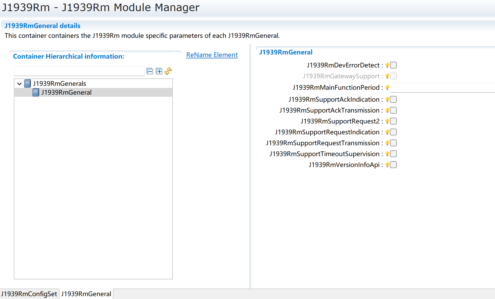
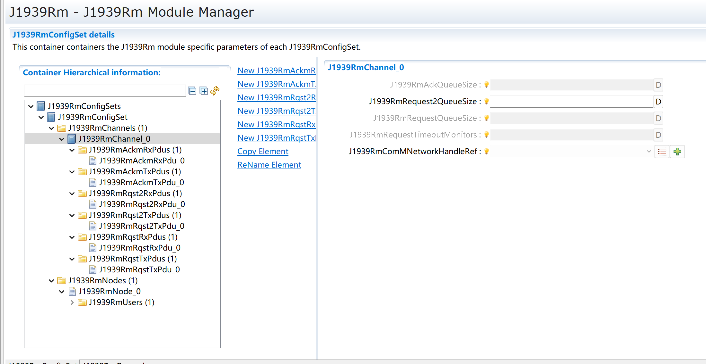
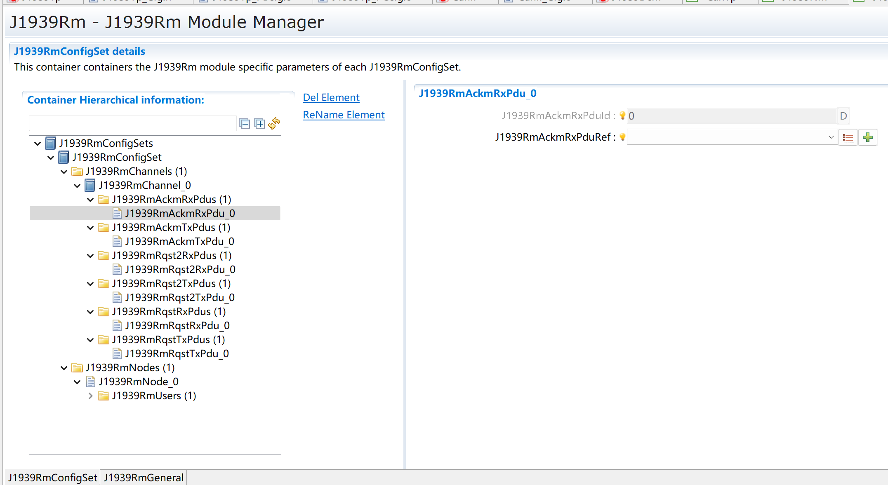
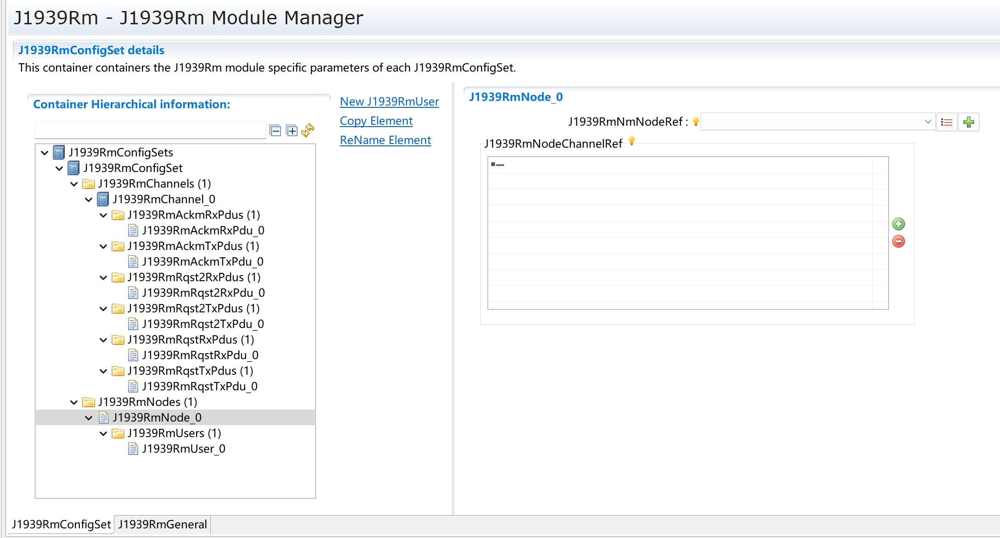
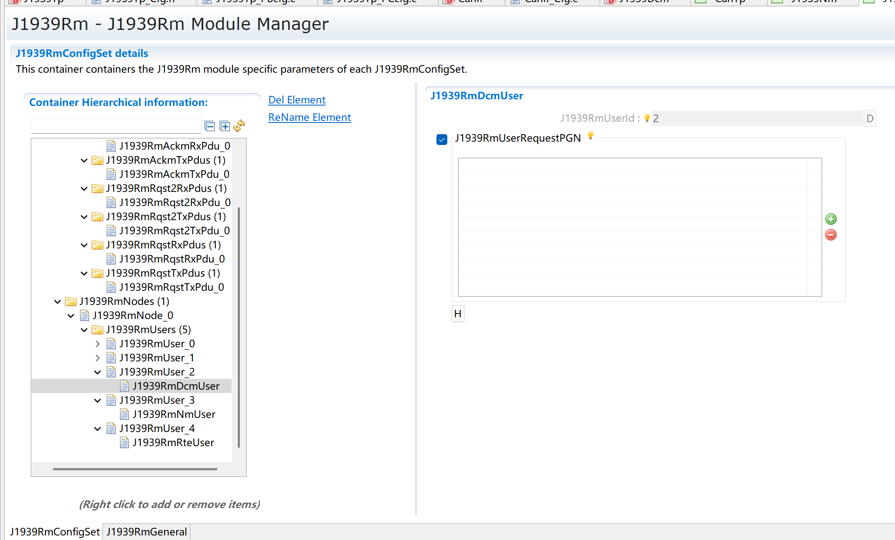
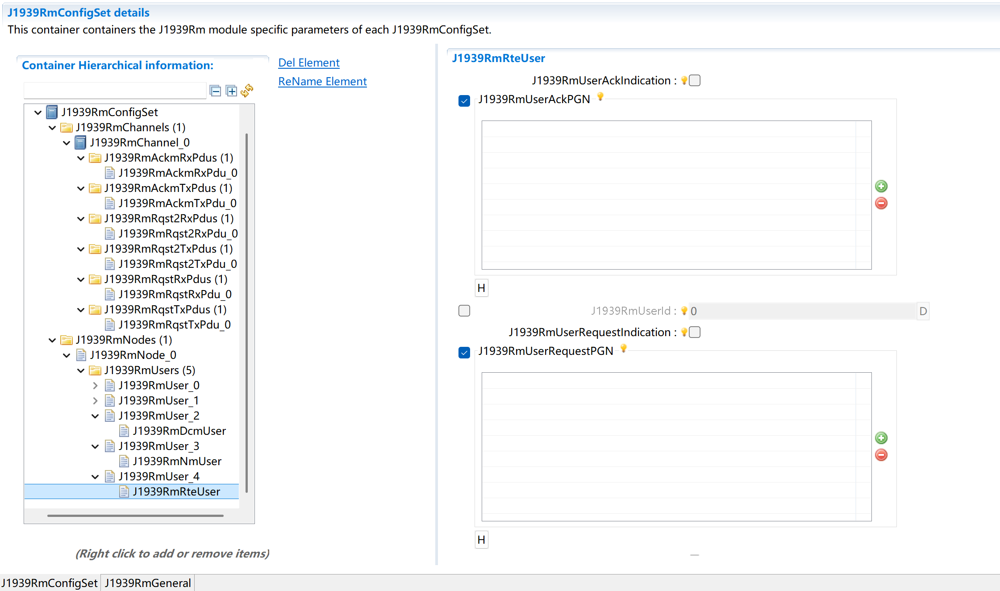
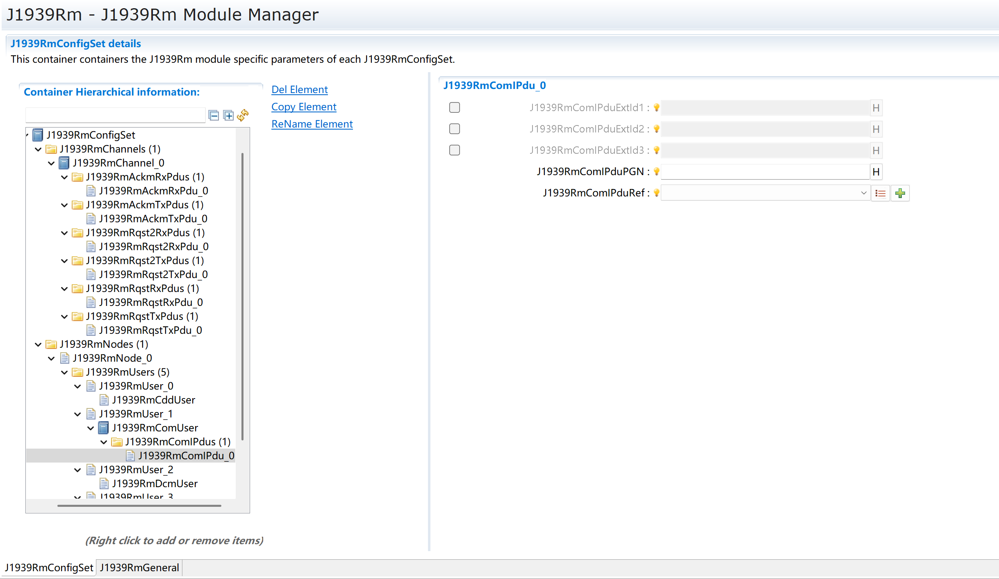
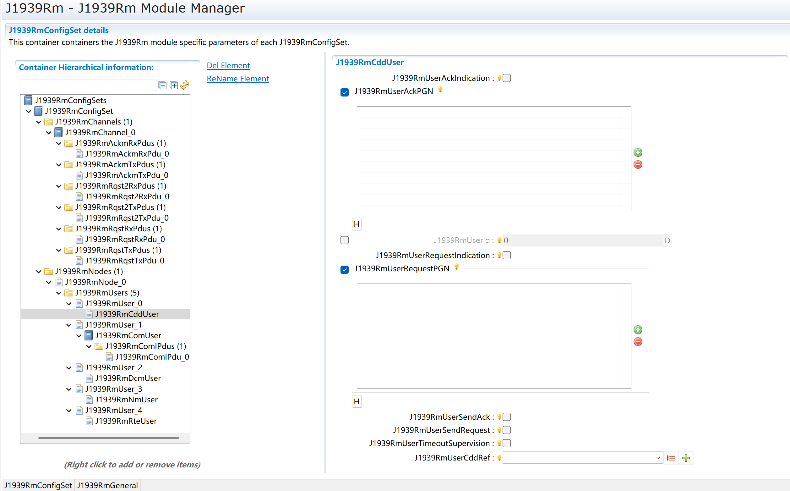

J1939Rm¶
文档信息(Document Information)¶
版本历史(Version History)¶
日期(Date) |
作者(Author) |
版本(Version) |
状态(State) |
说明(Explain) |
|---|---|---|---|---|
2025/03/06 |
Xue.Han |
V0.1 |
发布(Release) |
首次发布(First Release) |
2025/04/04 |
Xue.Han |
V1.0 |
发布(Release) |
正式发布(Official Release) |
2025/12/16 |
chao.sun |
V1.1 |
修正(Modify) |
调整文档架构和补充英文说明(Adjust the document structure and add English explanations) |
参考文档(References)¶
编号 |
分类 |
标题 |
版本 |
|---|---|---|---|
1 |
Autosar |
AUTOSAR_SRS_Gateway.pdf |
R19-11 |
2 |
Autosar |
AUTOSAR_SWS_SAEJ1939TransportLayer.pdf |
R19-11 |
3 |
Autosar |
AUTOSAR_SWS_BSWGeneral.pdf |
R19-11 |
4 |
Autosar |
AUTOSAR_EXP_LayeredSoftwareArchitecture.pdf |
R19-11 |
5 |
Autosar |
AUTOSAR_SWS_COM.pdf |
R19-11 |
6 |
Autosar |
AUTOSAR_SWS_PDURouter.pdf |
R19-11 |
7 |
Autosar |
AUTOSAR_SWS_SAEJ1939NetworkManagement.pdf |
R19-11 |
8 |
Autosar |
AUTOSAR_SWS_SAEJ1939DiagnosticCommunicationManager.pdf |
R19-11 |
9 |
Autosar |
AUTOSAR_SWS_DefaultErrorTracer.pdf |
R19-11 |
10 |
Autosar |
AUTOSAR_SWS_RTE.pdf |
R19-11 |
11 |
Autosar |
AUTOSAR_EXP_CDDDesignAndIntegrationGuideline.pdf |
R19-11 |
12 |
Autosar |
AUTOSAR_TPS_ECUConfiguration.pdf |
R19-11 |
13 |
Autosar |
AUTOSAR_SWS_CANInterface.pdf |
R19-11 |
14 |
Autosar |
AUTOSAR_SRS_SAEJ1939.pdf |
R19-11 |
15 |
Autosar |
AUTOSAR_SRS_BSWGeneral.pdf |
R19-11 |
16 |
Autosar |
AUTOSAR_SWS_CommunicationStackTypes.pdf |
R19-11 |
17 |
Autosar |
AUTOSAR_SWS_StandardTypes.pdf |
R19-11 |
术语¶
None
简写¶
简写 |
全称 |
解释 |
|---|---|---|
AC |
J1939 AddressClaimed PG (PGN = 0x0EE00) |
J1939 地址声明参数组(PGN = 0x0EE00)。 |
ACK |
J1939 Acknowledgement PG (ACKM) with control byte set to 0 |
J1939 确认参数组(ACKM)，控制字节设置为 0。 |
ACKM |
J1939 Acknowledgement PG (PGN = 0x0E800) |
J1939 确认参数组(PGN = 0x0E800)。 |
BSW |
Basic Software (module) |
基础软件（模块）。 |
CA |
Controller Application, role of an ECU tied to one address |
控制器应用，绑定到一个地址的 ECU 角色。 |
CDD |
Complex Driver, any software that interfaces directly with AUTOSAR BSW, but is not defined by AUTOSAR |
复杂驱动，直接与 AUTOSAR 基础软件接口但不由 AUTOSAR 定义的软件。 |
DA |
Destination address, the address of the receiver of a PG. |
目标地址，参数组(PG)接收方的地址。 |
DET |
Default Error Tracer, supports development and runtime error reporting |
默认错误跟踪器，支持开发和运行时错误报告。 |
DP |
Data Page, the most significant bit (MSB) of the 18 bit PGN |
数据页，18 位 PGN 的最高有效位(MSB)。 |
EDP |
Extended Data Page, the second bit (after MSB) of the 18 bit PGN |
扩展数据页，18 位 PGN 的第二位(MSB 之后）。 |
Extended Identifier |
These bytes represent multiplexor values in a multiplexed message which is requested via RQST2 |
表示通过 RQST2 请求的多路复用消息中的多路复用器值。 |
J1939Rm |
SAE J1939 Request Manager |
SAE J1939 请求管理器。 |
MetaData |
Meta data transferred alongside a PDU |
与 PDU 一起传输的元数据。 |
NACK |
J1939 Acknowledgement PG (ACKM) with control byte set to 1 |
J1939 确认参数组(ACKM)，控制字节设置为 1。 |
PDU |
Protocol Data Unit, a message transferred between the layers of the AUTOSAR stack, also known as I-PDU |
协议数据单元，AUTOSAR 堆栈各层之间传输的消息，也称为 I-PDU。 |
PDU1 |
J1939 PDU Type 1, this kind of PDUs can be sent to a specific destination address |
J1939 PDU 类型 1，此类 PDU 可以发送到特定目标地址。 |
PDU2 |
J1939 PDU Type 2, this kind of PDUs is always sent to the whole network |
J1939 PDU 类型 2，此类 PDU 始终发送到整个网络。 |
PDUF |
PDU Format, the middle byte of the 18 bit PGN |
PDU 格式，18 位 PGN 的中间字节。 |
PDUS |
PDU Specific, the lower byte of the 18 bit PGN |
PDU 特定，18 位 PGN 的低字节。 |
PG |
Parameter Group |
参数组。 |
PGN |
Parameter Group Number (18 bits, contains EDP, DP, PDUF, PDUS) |
参数组编号(18 位，包含 EDP、DP、PDUF、PDUS)。 |
RQST |
J1939 Request PG (PGN = 0x0EA00) |
J1939 请求参数组(PGN = 0x0EA00)。 |
RQST2 |
J1939 Request2 PG (PGN = 0x0C900) |
J1939 请求2 参数组(PGN = 0x0C900)。 |
RTE |
AUTOSAR Runtime Environment |
AUTOSAR 运行时环境。 |
SA |
Source address, the address of the transmitter of a PG. |
源地址，参数组(PG)发送方的地址。 |
SW-C |
AUTOSAR Software Component (of the Application) |
AUTOSAR 软件组件（应用层）。 |
XFER |
J1939 Transfer PG (PGN = 0x0CA00) |
J1939 传输参数组(PGN = 0x0CA00)。 |
简介¶

J1939Rm 主要用于 J1939 网络中 RQST 和 RQST2 请求的接收与发送、应答的接收与发送。根据 PGN 的配置情况，J1939Rm 将请求传递给 J1939Dcm、J1939Nm、RTE、CDD 和 COM。因此，本模块需要实现如下功能：模块初始化、通信状态修改、请求接收与发送、请求传递、应答接收与发送、请求与应答发送队列管理、超时监督、错误检测，不支持 SAE J1939-21 中的 Transfer PG。
功能描述¶
公共特性(Public Features)¶
多核多分区功能(Multi-core and Multi-partition Features)¶
不支持。
Not supported.
PBS功能(PBS Features)¶
支持配置不同数量的J1939NmChannel通道。 Supports configuring different numbers of J1939NmChannel channels.
支持配置不同数量的J1939NmNode节点。 Supports configuring different numbers of J1939NmNode nodes.
支持配置不同内容的J1939NmChannel通道及节点。 Supports configuring J1939NmChannel channels and nodes with different content.
Memmap功能(Memmap Features)¶
memmap文件是动态的。存在J1939RM_START_SEC_CODE、J1939RM_STOP_SEC_CODE、J1939RM_START_SEC_CODE_FAST、J1939RM_STOP_SEC_CODE_FAST、J1939RM_START_SEC_CONFIG_DATA_UNSPECIFIED、J1939RM_STOP_SEC_CONFIG_DATA_UNSPECIFIED、J1939RM_START_SEC_VAR_CLEARED_BOOLEAN、J1939RM_STOP_SEC_VAR_CLEARED_BOOLEAN、J1939RM_START_SEC_VAR_CLEARED_UNSPECIFIED、J1939RM_STOP_SEC_VAR_CLEARED_UNSPECIFIED、J1939RM_START_SEC_VAR_CLEARED_PTR、J1939RM_STOP_SEC_VAR_CLEARED_PTR、J1939RM_START_SEC_VAR_INIT_UNSPECIFIED、J1939RM_STOP_SEC_VAR_INIT_UNSPECIFIED、J1939RM_START_SEC_CONFIG_DATA_16、J1939RM_STOP_SEC_CONFIG_DATA_16字段。
The memmap file is Dynamic.There are J1939RM_START_SEC_CODE、J1939RM_STOP_SEC_CODE、J1939RM_START_SEC_CODE_FAST、J1939RM_STOP_SEC_CODE_FAST、J1939RM_START_SEC_CONFIG_DATA_UNSPECIFIED、J1939RM_STOP_SEC_CONFIG_DATA_UNSPECIFIED、J1939RM_START_SEC_VAR_CLEARED_BOOLEAN、J1939RM_STOP_SEC_VAR_CLEARED_BOOLEAN、J1939RM_START_SEC_VAR_CLEARED_UNSPECIFIED、J1939RM_STOP_SEC_VAR_CLEARED_UNSPECIFIED、J1939RM_START_SEC_VAR_CLEARED_PTR、J1939RM_STOP_SEC_VAR_CLEARED_PTR、J1939RM_START_SEC_VAR_INIT_UNSPECIFIED、J1939RM_STOP_SEC_VAR_INIT_UNSPECIFIED、J1939RM_START_SEC_CONFIG_DATA_16 and J1939RM_STOP_SEC_CONFIG_DATA_16 fields.
独占区功能(Exclusive Area Features)¶
None.
模块特性(Module Features)¶
状态管理功能(State management functionality)¶
状态管理功能指J1939Rm中的Node，Channel状态通过外部接口J1939Rm_SetState进行控制。J1939Rm中每个Node与之映射的Channel状态管理独立，状态分为Online、Offline。模块初始化完成时默认为Offline状态，Offline 状态下只能接收Request请求AddressClaimed PG。在Offline 状态下发送Request(2)超时监控以及ACKM都将禁止。Online状态将支持Offline下禁止的内容。
The state management function refers to the Node in J1939Rm, where the Channel state is controlled through the external interface J1939Rm_SetState. In J1939Rm, the state management of each Node and its corresponding Channel is independent, with states classified as Online or Offline. When the module initialization is complete, the default state is Offline. In the Offline state, only Request and AddressClaimed PG requests can be received. In the Offline state, sending Request(2), timeout monitoring, and ACKM are all disabled. The Online state will support the functionalities that are prohibited in the Offline state.
接收Request/Request2(Receive Request/Request2)¶
接收到的Request/Request2涉及到PGN识别，识别成功后转发到其他模块。接收到Request(2)将被PGN进行检查，以确定目标路径。若不支持的PGN将发送ACKM中的NACK报文（目标地址非全局地址时）；对于确定了有效的PGN转发时涉及到Com与非COM的目标路劲。对于非Com的目标路径调用上层的模板接口<User>_RequestIndication，这样的目标路径对应的模块有J1939Dcm、J1939Nm、Rte、Cdd。对于COM的PGN请求，转发时调用的接口Com_TriggerIPDUSendWithMetaData。
The received Request/Request2 involves PGN identification. After successful identification, it is forwarded to other modules. The received Request(2) will have its PGN checked to determine the target path. If the PGN is not supported, a NACK message will be sent in ACKM (when the target address is not a global address). For PGNs with a valid determined path, forwarding involves both COM and non-COM target paths. For non-COM target paths, the upper-layer template interface <User>_RequestIndication is called. Modules corresponding to such target paths include J1939Dcm, J1939Nm, Rte, and Cdd. For COM PGN requests, the interface Com_TriggerIPDUSendWithMetaData is called during forwarding.
发送Request/Request2(Send Request/Request2)¶
发送Request(2)用于请求对方发出对应的PGN或触发，发送请求涉及到超时监控。发送Request(2)来源于J1939Rm的上层模块RTE或CDD调用接口J1939Rm_SendRequest，当调用时带有扩展信息标识时则视为发送Request2，不带则发送Request。Request与Request2都带有自己的队列，队列的大小来源于配置界面J1939RmRequestQueueSize与J1939RmRequestQueue2Size，发送Request(2)将触发超时监控（可选）。超时监控时间为SAE规定的Request(2)应答超时时间1.25s。当发生超时后，将调用<User>_RequestTimeoutIndication接口；当发送的Request(2)对方的应答未ACKM时，若为Com将调用J1939Rm_ComRxIpduCallout，非COM将调用J1939Rm_CancelRequestTimeout取消超时监控。
Sending Request(2) is used to request the other party to send the corresponding PGN or trigger an action. Sending a request involves timeout monitoring. Sending Request(2) originates from the upper-level module RTE or CDD of J1939Rm calling the interface J1939Rm_SendRequest. When the call includes an extended information identifier, it is considered sending Request2; if not, it sends Request. Both Request and Request2 have their own queues, with the queue size coming from the configuration interface J1939RmRequestQueueSize and J1939RmRequestQueue2Size. Sending Request(2) will trigger timeout monitoring (optional). The timeout monitoring period is the SAE-specified Request(2) response timeout of 1.25 seconds. When a timeout occurs, the <User>_RequestTimeoutIndication interface will be called; if the sent Request(2) response from the other party is not ACKM, for COM it will call J1939Rm_ComRxIpduCallout, and for non-COM it will call J1939Rm_CancelRequestTimeout to cancel timeout monitoring.
发送ACK(Send ACK)¶
发送ACK可以是上层模块调用J1939Rm的接口J1939Rm_SendAck触发。ACK发送的ACKM报文目标地址限定为全局地址FF，ACK的发送有队列机制，队列的大小通过配置项J1939RmAckQueueSize决定。通过调用接口触发的ACK发送将回环给J1939Rm自己。
Sending an ACK can be triggered by an upper-layer module calling the J1939Rm interface J1939Rm_SendAck. The target address of the ACKM message for ACK sending is limited to the global address FF. The sending of ACKs uses a queue mechanism, and the size of the queue is determined by the configuration item J1939RmAckQueueSize. The ACK sent by calling the interface will loop back to J1939Rm itself.
接收ACK(Receive ACK)¶
接收Ack：J1939Rm校验通过后转发给上层模块<User>_AckIndication。接收ACK校验包括PGN、源地址、应答地址。校验通过后J1939Rm根据配置中的User类型决定转发的上层模块，ACK模块包括CDD、Rte。
Receive Ack: After the J1939Rm verification is passed, it is forwarded to the upper-layer module <User>_AckIndication. The reception ACK verification includes PGN, source address, and destination address. Once the verification is passed, J1939Rm determines which upper-layer module to forward to based on the User type configured. The ACK modules include CDD and Rte.
偏差(Deviation)¶
None
扩展(Extension)¶
None
集成(Integration)¶
文件列表(File List)¶
静态文件(Static Files)¶
文件(File) |
描述(Description) |
|---|---|
J1939Rm_Types.h |
J1939Rm 模块的类型定义文件；包括类型定义和需要使用的配置结构声明。(Type definition file for the J1939Rm module; includes type definitions and declarations of configuration structures that need to be used.) |
J1939Rm.h |
J1939Rm 模块的 API 声明和宏定义文件；包括需要使用的宏定义和外部函数声明。(API declaration and macro definition file for the J1939Rm module; includes the macros to be used and external function declarations.) |
J1939Rm.c |
J1939Rm 模块的 API 实现文件；包含需要使用的宏定义、内部函数和全局函数。(API implementation file for the J1939Rm module; includes the macro definitions, internal functions, and global functions that need to be used.) |
J1939Rm_MemMap.h |
包含 J1939Rm 模块的内存抽象定义。(Memory abstraction definitions containing the J1939Rm module.) |
J1939Rm_Com.h |
包含需要由 COM 模块使用的 API 信息。(Contains API information required by COM modules.) |
J1939Rm_Internal.h |
J1939Rm 模块的内部 API 声明和宏定义文件。(Internal API declaration and macro definition file of the J1939Rm module.) |
动态文件(Dynamic file)¶
文件 |
描述 |
|---|---|
J1939Rm_Cfg.h |
J1939Rm 模块实现所需的配置功能宏定义。(Macro definitions for the configuration functions required by the J1939Rm module.) |
J1939Rm_Cfg.c |
J1939Rm 模块实现所需的配置参数；包含需要使用的 API 信息。(Configuration parameters required for the implementation of the J1939Rm module; includes the API information that needs to be used.) |
J1939Rm_Lcfg.h |
包含 J1939Rm 模块实现所需的数据类型声明和宏定义。(Contains data type declarations and macro definitions required for the implementation of the J1939Rm module.) |
J1939Rm_Lcfg.c |
J1939Rm 模块实现所需的配置参数。(Configuration parameters required for implementing the J1939Rm module.) |
J1939Rm_PBcfg.c |
J1939Rm 模块实现所需的 PostBuild 配置参数。(PostBuild configuration parameters required for the implementation of the J1939Rm module.) |
J1939Rm_PBcfg.h |
J1939Rm 模块实现所需的 PostBuild 数据类型声明和宏定义。(PostBuild data type declarations and macro definitions required for the implementation of the J1939Rm module.) |
Rte_J1939Rm_Type.h |
J1939Rm实现数据类型文件。(J1939Rm implements data type files.) |
错误处理(Error Handling)¶
开发错误(Development Errors)¶
Error code |
Value[hex] |
Description |
|---|---|---|
J1939RM_E_UNINIT |
0x01 |
模块未初始化时调用了 API。(The API was called before the module was initialized.) |
J1939RM_E_REINIT |
0x02 |
Init API 被调用了两次。(The Init API was called twice.) |
J1939RM_E_INIT_FAILED |
0x03 |
J1939Rm_Init 被调用时传入了一个无效的配置指针。(An invalid configuration pointer was passed when J1939Rm_Init was called.) |
J1939RM_E_PARAM_POINTER |
0x10 |
调用 API 服务时传入了一个空指针。(A null pointer was passed when calling the API service.) |
J1939RM_E_INVALID_PDU_SDU_ID |
0x11 |
调用 API 服务时传入了一个错误的 ID。(An incorrect ID was passed when calling the API service.) |
J1939RM_E_INVALID_NETWORK_ID |
0x12 |
调用 API 服务时传入了一个错误的网络句柄。(An incorrect network handle was passed when calling the API service.) |
J1939RM_E_INVALID_STATE |
0x13 |
调用 J1939Rm_SetState API 时传入了一个错误的状态。(An incorrect state was passed when calling the J1939Rm_SetState API.) |
J1939RM_E_INVALID_USER |
0x14 |
调用 API 时传入了一个非法的用户 ID。(An invalid user ID was passed when calling the API.) |
J1939RM_E_INVALID_PGN |
0x15 |
调用 API 时传入了一个未知或非法的 PGN。(An unknown or invalid PGN was passed when calling the API.) |
J1939RM_E_INVALID_PRIO |
0x16 |
调用 API 时传入了一个非法的优先级。(An invalid priority was passed when calling the API.) |
J1939RM_E_INVALID_ADDRESS |
0x17 |
调用 API 时传入了一个非法的节点地址。(An invalid node address was passed when calling the API.) |
J1939RM_E_INVALID_OPTION |
0x18 |
调用 API 时传入了一个非法的布尔选项。(An invalid boolean option was passed when calling the API.) |
J1939RM_E_INVALID_ACK_CODE |
0x19 |
调用 API 时传入了一个非法的 AckCode。(An invalid AckCode was passed when calling the API.) |
J1939RM_E_INVALID_NODE_ID |
0x1a |
调用 API 时传入了一个非法的节点 ID。(An invalid node ID was passed when calling the API.) |
J1939RM_E_INVALID_EXTID_INFO |
0x1b |
调用 API 时传入了无效的扩展标识符字节。(An invalid extension identifier byte was passed when calling the API.) |
产品错误(Product Errors)¶
None
运行时错误(Runtime Errors)¶
None
API接口描述(API Interface Description)¶
数据类型定义 (Data Type definition)¶
Std_VersionInfoType类型定义 (Std_VersionInfoType type definition)¶
名称 (Name) |
Std_VersionInfoType |
|---|---|
类型 (Type) |
Structure |
定义 (Define) |
typedef struct |
{ |
|
uint16 vendorID; |
|
uint16 moduleID; |
|
uint8 instanceID; |
|
uint8 sw_major_version; |
|
uint8 sw_minor_version; |
|
uint8 sw_patch_version; |
|
} Std_VersionInfoType; |
|
范围 (Range) |
无 |
描述 (Description) |
用于描述软件版本信息的结构体类型 (Struct type for describing software version information) |
Std_ReturnType类型定义 (Std_ReturnType Type Definition)¶
名称 (Name) |
Std_ReturnType |
|---|---|
类型 (Type) |
uint8 |
定义 (Define) |
typedef uint8 PduIdType; |
范围 (Range) |
0 … 255 |
描述 (Description) |
用于定义J1939Rm模块的函数返回值的派生数据类型 (Data types derived for describing API return value in J1939Rm) |
NetworkHandleType类型定义 (NetworkHandleType Type Definition)¶
名称 (Name) |
NetworkHandleType |
|---|---|
类型 (Type) |
uint8 |
定义 (Define) |
typedef uint8 NetworkHandleType; |
范围 (Range) |
0 … 255 |
描述 (Description) |
用于定义J1939Rm模块的网络处理的派生数据类型 (Data types derived for describing network handle in J1939Rm) |
PduIdType类型定义 (PduIdType Type Definition)¶
名称 (Name) |
PduIdType |
|---|---|
类型 (Type) |
uint16 |
定义 (Define) |
typedef uint16 PduIdType; |
范围 (Range) |
0 … 65535 |
描述 (Description) |
用于定义J1939Rm模块的PDU标识符的派生数据类型 (Data types derived for describing PDU identifier in J1939Rm) |
PduLengthType类型定义 (PduLengthType Type Definition)¶
名称 (Name) |
PduLengthType |
|---|---|
类型 (Type) |
uint16 |
定义 (Define) |
typedef uint16 PduLengthType; |
范围 (Range) |
0 … 65535 |
描述 (Description) |
用于定义J1939Rm模块的PDU长度的派生数据类型 (Data types derived for describing PDU length in J1939Rm) |
PduInfoType类型定义 (PduInfoType Type Definition)¶
名称 (Name) |
PduInfoType |
|---|---|
类型 (Type) |
Structure |
定义 (Define) |
typedef struct |
{ |
|
uint8* SduDataPtr; |
|
uint8* MetaDataPtr; |
|
PduLengthType SduLength; |
|
} PduInfoType; |
|
范围 (Range) |
无 |
描述 (Description) |
用于描述J1939Rm模块存储PDU信息的结构体类型 (Struct type for describing store PDU information in J1939Rm) |
J1939Rm_ExtIdType类型定义 (J1939Rm_ExtIdType Type Definition)¶
名称 (Name) |
J1939Rm_ExtIdType |
|---|---|
类型 (Type) |
uint8 |
定义 (Define) |
typedef uint8 J1939Rm_ExtIdType; |
范围 (Range) |
0 … 255 |
描述 (Description) |
用于定义J1939Rm模块的扩展标识符的派生数据类型 (Data types derived for describing extended identifier in J1939Rm) |
J1939Rm_ExtIdInfoType类型定义 (J1939Rm_ExtIdInfoType Type Definition)¶
名称 (Name) |
J1939Rm_ExtIdInfoType |
|---|---|
类型 (Type) |
Structure |
定义 (Define) |
typedef struct |
{ |
|
J1939Rm_ExtIdType extIdType; |
|
uint8 extId1; |
|
uint8 extId2; |
|
uint8 extId3; |
|
} J1939Rm_ExtIdInfoType; |
|
范围 (Range) |
无 |
描述 (Description) |
用于描述J1939Rm模块存储扩展标识符信息的结构体类型 (Struct type for describing store extended identifier information in J1939Rm) |
J1939Rm_StateType类型定义 (J1939Rm_StateType Type Definition)¶
名称 (Name) |
J1939Rm_StateType |
|---|---|
类型 (Type) |
Enumeration |
范围 (Range) |
J1939RM_STATE_OFFLINE = 0U |
J1939RM_STATE_ONLINE = 1U |
|
描述 (Description) |
用于定义J1939Rm模块的通信状态分类的枚举类型 (Enumerated type for store the Classification of communication state in J1939Rm) |
输入函数描述 (Describe the input function:)¶
输入模块 (Input Module) |
API |
|---|---|
PduR |
PduR_J1939RmTransmit |
Det |
Det_ReportError |
Det |
Det_ReportRuntimeError |
Com |
Com_TriggerIPDUSendWithMetaData |
J1939Dcm |
J1939Dcm_RequestIndication |
J1939Nm |
J1939Nm_RequestIndication |
Nm |
Nm_NetworkMode |
NA |
User_AddressClaimedIndication |
NA |
Nm_StateChangeNotification |
静态接口函数定义 (Static interface function definition)¶
J1939Rm_Init¶
void J1939Rm_Init(const J1939Rm_ConfigType *configPtr)
Service for basic initialization of J1939Rm module.
- Sync/Async
Synchronous
- Reentrancy
Non Reentrant.
Parameters
Dir |
Name |
Description |
|---|---|---|
[in] |
configPtr |
Pointer to configuration set in Variant Post-Build. |
- Return type
void
J1939Rm_DeInit¶
void J1939Rm_DeInit(void)
This function resets the J1939 Request Manager to the uninitialized state.
- Sync/Async
Synchronous
- Reentrancy
Non Reentrant.
- Return type
void
J1939Rm_GetVersionInfo¶
void J1939Rm_GetVersionInfo(Std_VersionInfoType *versionInfo)
Returns the version information of this module.
- Sync/Async
Synchronous
- Reentrancy
Non Reentrant.
Parameters
Dir |
Name |
Description |
|---|---|---|
[in] |
versionInfo |
Pointer to version information. |
- Return type
void
J1939Rm_SetState¶
Std_ReturnType J1939Rm_SetState(NetworkHandleType channel, uint8 node, J1939Rm_StateType newState)
Changes the communication state of J1939Rm to offline (only Request for AC supported) or online.
- Sync/Async
Synchronous
- Reentrancy
Reentrant.
Parameters
Dir |
Name |
Description |
|---|---|---|
[in] |
channel |
Channel for which the state shall be changed. |
[in] |
node |
Node for which the state shall be changed. |
[in] |
newState |
New state the J1939Rm shall enter. |
- Return type
Std_ReturnType
Return values
Name |
Description |
|---|---|
E_OK |
New communication state was set. |
E_NOT_OK |
Communication state was not changed due to wrong value in NewState or wrong initialization state of the module. |
J1939Rm_SendRequest¶
Std_ReturnType J1939Rm_SendRequest(uint8 userId, NetworkHandleType channel, uint32 requestedPgn, const J1939Rm_ExtIdInfoType *extIdInfo, uint8 destAddress, uint8 priority, boolean checkTimeout)
Requests transmission of a Request PG.
- Sync/Async
Synchronous
- Reentrancy
Reentrant.
Parameters
Dir |
Name |
Description |
|---|---|---|
[in] |
userId |
Identification of the calling module. |
[in] |
channel |
Channel on which the request shall be sent. |
[in] |
requestedPgn |
PGN of the requested PG. |
[in] |
extIdInfo |
extern id information. |
[in] |
destAddress |
Address of the destination node or 0xFF for broadcast. |
[in] |
priority |
Priority of the Request PG. |
[in] |
checkTimeout |
Whether Timeout supervision will be performed. |
- Return type
Std_ReturnType
Return values
Name |
Description |
|---|---|
E_OK |
Transmission request is accepted. |
E_NOT_OK |
Transmission request is not accepted. |
J1939Rm_CancelRequestTimeout¶
Std_ReturnType J1939Rm_CancelRequestTimeout(uint8 userId, NetworkHandleType channel, uint32 requestedPgn, const J1939Rm_ExtIdInfoType *extIdInfo, uint8 destAddress)
Cancels timeout monitoring of a Request. If the request is not active or timeout monitoring was not requested, this call has no effect.
- Sync/Async
Synchronous
- Reentrancy
Reentrant.
Parameters
Dir |
Name |
Description |
|---|---|---|
[in] |
userId |
Identification of the calling module. |
[in] |
channel |
Channel on which the request shall be sent. |
[in] |
requestedPgn |
PGN of the requested PG. |
[in] |
extIdInfo |
extern id information. |
[in] |
destAddress |
Address of the destination node or 0xFF for broadcast. |
- Return type
Std_ReturnType
Return values
Name |
Description |
|---|---|
E_OK |
Cancellation of request timeout was successful. |
E_NOT_OK |
Cancellation of request timeout was not successful. |
J1939Rm_SendAck¶
Std_ReturnType J1939Rm_SendAck(uint8 userId, NetworkHandleType channel, uint32 ackPgn, const J1939Rm_ExtIdInfoType *extIdInfo, J1939Rm_AckCode ackCode, uint8 ackAddress, uint8 priority, boolean broadcast)
Requests transmission of an Acknowledgement PG.
- Sync/Async
Synchronous
- Reentrancy
Reentrant.
Parameters
Dir |
Name |
Description |
|---|---|---|
[in] |
userId |
Identification of the calling module. |
[in] |
channel |
Channel on which the acknowledgement shall be sent. |
[in] |
ackPgn |
PGN of the acknowledgement PG. |
[in] |
extIdInfo |
extern id information. |
[in] |
ackCode |
Type of acknowledgement. |
[in] |
ackAddress |
Address of the node that sent the request. |
[in] |
priority |
Priority of the Acknowledgement PG. |
[in] |
broadcast |
Indicates whether the ACKM is a response to a broadcast request. |
- Return type
Std_ReturnType
Return values
Name |
Description |
|---|---|
E_OK |
Transmission request is accepted. |
E_NOT_OK |
Transmission request is not accepted. |
J1939Rm_RxIndication¶
void J1939Rm_RxIndication(PduIdType RxPduId, const PduInfoType *PduInfoPtr)
Indication of a received I-PDU from a lower layer communication interface.
- Sync/Async
Synchronous
- Reentrancy
Reentrant.
Parameters
Dir |
Name |
Description |
|---|---|---|
[in] |
RxPduId |
ID of the received I-PDU. |
[in] |
PduInfoPtr |
Contains the length (SduLength) of the received I-PDU and a pointer to a buffer (SduDataPtr) containing the I-PDU. |
- Return type
void
J1939Rm_TxConfirmation¶
void J1939Rm_TxConfirmation(PduIdType TxPduId, Std_ReturnType result)
The lower layer communication interface module confirms the transmission of an I-PDU.
- Sync/Async
Synchronous
- Reentrancy
Reentrant.
Parameters
Dir |
Name |
Description |
|---|---|---|
[in] |
TxPduId |
ID of the I-PDU that has been transmitted. |
[in] |
result |
transmission result. |
- Return type
void
J1939Rm_CheckReceivedComIPdu¶
boolean J1939Rm_CheckReceivedComIPdu(PduIdType PduId, const PduInfoType* PduInfoPtr)
The I-PDU callout on receiver side can be configured to implement user-defined.
- Sync/Async
Synchronous
- Reentrancy
Reentrant
Parameters
Dir |
Name |
Description |
|---|---|---|
[in] |
PduId |
ID of the I-PDU that has been transmitted. |
[in] |
PduInfoPtr |
Contains the length (SduLength) of the received I-PDU and a pointer to a buffer (SduDataPtr) containing the I-PDU. |
- Return type
boolean
Return values
Name |
Description |
|---|---|
TRUE |
Check pass |
FALSE |
Check fail |
可配置回调函数(Configurable callback function)¶
J1939Rm_MainFunction¶
void J1939Rm_MainFunction_<ComMChannel.ShortName>(void)
This function shall perform the processing of the AUTOSAR J1939Dcm activities that are not directly initiated by the calls e.g. from the RTE. There shall be one dedicated Main Function for each channel of J1939Dcm.
- Sync/Async
Synchronous
- Reentrancy
Non Reentrant
- Return type
void
配置(Configuration)¶
J19939Rmeneral配置(J19939Rmeneral Configuration)¶

J1939RmGeneral配置图¶
J1939Rm General Configuration
常规参数配置列表(List of standard parameter configurations)¶
参数名称(Parameter Name) |
参数范围(Parameter range) |
默认取值(Default value) |
参数描述(Parameter Description) |
依赖关系(Dependency) |
|---|---|---|---|---|
J1939RmDevErrorDetect |
TRUE/FALSE |
FALSE |
是否使能DET开发错误检测(Whether to enable DET development error detection) |
依赖于Det模块的支持(Depends on the support of the Det module) |
J1939RmMainFunctionPeriod |
0… INF |
0.01 |
MainFunction调用周期(MainFunction call cycle) |
None |
J1939RmSupportAckIndication |
TRUE/FALSE |
FALSE |
是否支持ACKM接收(Whether to support ACKM reception) |
无(None) |
J1939RmSupportAckTransmission |
TRUE/FALSE |
FALSE |
是否支持ACKM发送(Whether to support sending ACKM.) |
无(None) |
J1939RmSupportRequest2 |
TRUE/FALSE |
FALSE |
是否支持Request2(Whether to support Request2.) |
无(None) |
J1939RmSupportRequestIndication |
TRUE/FALSE |
FALSE |
是否支持接收Request(Whether to support receiving request.) |
无(None) |
J1939RmSupportRequestTransmission |
TRUE/FALSE |
FALSE |
是否支持发送request(Whether to support sending request.) |
无(None) |
J1939RmSupportTimeoutSupervision |
TRUE/FALSE |
FALSE |
是否支持发送请求超时监控(Whether to enable request timeout monitoring.) |
无(None) |
J1939RmVersionInfoApi |
TRUE/FALSE |
FALSE |
是否允许版本获取接口释放(Whether to allow the version retrieval interface to release.) |
无(None) |
J1939RmChannel配置(J1939RmChannel Configuration)¶

J1939RmChannel配置图¶
如图 J1939RmChannel配置图，此处主要配置的内容是每个channel的属性。主要包括该channel下的发送Request/Request2/Ack队列大小，以及该Channel映射的ComM channel。
As shown in J1939RmChannel配置图, the main configuration here is the properties of each channel. This mainly includes the sizes of the Send Request/Request2/Ack queues under this channel, as well as the ComM channel mapped to this channel.
参数名称(Parameter Name) |
参数范围(Parameter range) |
默认取值(Default value) |
参数描述(Parameter Description) |
依赖关系(Dependency) |
|---|---|---|---|---|
J1939RmAckQueueSize |
0…255 |
0 |
发送Ack队列大小。(Send Ack Queue Size.) |
J1939RmSupportAckTransmission是否开启。(Whether J1939RmSupportAckTransmission is enabled.) |
J1939RmRequestQueue2Size |
0…255 |
0 |
发送Request2队列大小。(Send Request2 Queue Size.) |
当J1939RmSupportTimeoutSupervision打开时取值应大于0。(When J1939RmSupportTimeoutSupervision is enabled, the value should be greater than 0.) |
J1939RmRequestQueueSize |
0…255 |
0 |
发送Request队列大小。(Send Request Queue Size.) |
当J1939RmSupportTimeoutSupervision打开时取值应大于0。(When J1939RmSupportTimeoutSupervision is enabled, the value should be greater than 0.) |
J1939RmRequestTimeoutMonitors |
0…255 |
0 |
超时监控队列大小。(Timeout Monitoring Queue Size.) |
当J1939RmSupportTimeoutSupervision打开时取值应大于0。(When J1939RmSupportTimeoutSupervision is enabled, the value should be greater than 0.) |
J1939RmComMNetworkHandleRef |
索引[ComM Channel ](Index [ComM Channel]) |
无(None) |
超时监控队列大小。(Timeout monitor queue size.) |
Channel映射的ComM channel。(The ComM channel mapped to the Channel.) |
J1939RmChannel Pdu配置(J1939RmChannel Pdu Configuration)¶

J1939Rmchannel_Pdu配置图¶
如图 J1939Rmchannel_Pdu配置图 此处需要填配置的是该channel下的 Ackm/Rqst2/Rqst的Pdu引用，便于触发Ackm/Rqst2/Rqst的接收与发送。此处仅介绍Ackm的Pdu配置，Rqst2/Rqst同理。
As shown in the figure J1939Rmchannel_Pdu配置图, the configuration required here is the PDU references for Ackm/Rqst2/Rqst under this channel, which facilitates the reception and transmission of Ackm/Rqst2/Rqst. Here, only the PDU configuration for Ackm is introduced; Rqst2/Rqst is similar.
参数名称(Parameter Name) |
参数范围(Parameter range) |
默认取值(Default value) |
参数描述(Parameter Description) |
依赖关系(Dependency) |
|---|---|---|---|---|
J1939RmAckmRxPduRef |
索引[PduRDestPdu](Index [PduRDestPdu]) |
无(None) |
工具生成的接收 ACKM PDU ID(Tool-generated received ACKM PDU ID.) |
PduR中需要配置DestPdu(DestPdu needs to be configured in PduR.) |
J1939RmAckmTxPduRef |
索引[PduRSrcPdu](Index [PduRSrcPdu]) |
无(None) |
工具生成的发送 ACKM PDU ID(Tool-generated Send ACKM PDU ID.) |
PduR中需要配置SrcPdu(SrcPdu needs to be configured in PduR.) |
J1939RmNode 配置(J1939RmNode Configuration)¶

J1939RmNode配置图¶
如图 J1939RmNode配置图,此处为Node节点配置，每个Node下会配置很多User，此处介绍每个Node下的通用属性。
As shown in J1939RmNode配置图, this is the Node configuration, where each Node will have many Users configured. Here we introduce the common properties under each Node.
参数名称(Parameter Name) |
参数范围(Parameter range) |
默认取值(Default value) |
参数描述(Parameter Description) |
依赖关系(Dependency) |
|---|---|---|---|---|
J1939RmNmNodeRef |
索引[J1939Nm Node](Index [J1939Nm Node]) |
无(None) |
J1939Rm Node映射的J1939Nm Node(J1939Rm Node mapped to J1939Nm Node.) |
引用的J1939RmNmNodeRef在J1939Nm中J1939NmNodePreferredAddress需要配置(The referenced J1939RmNmNodeRef needs to be configured in J1939Nm under J1939NmNodePreferredAddress.) |
J1939RmNodeChannelRef |
索引[J1939Rm Channel](Index [J1939Nm Node]) |
无(None) |
J1939RmNode映射到具体哪些J1939RmChannel(Explain which specific J1939RmChannels the J1939RmNode maps to.) |
无(None) |
J1939RmUser 配置(J1939RmUser Configuration)¶
J1939RmUser 服务的用户有 J1939Dcm、J1939Nm、Rte、Cdd、Com模块，负责处理对应的Pgn请求或者发送。
The users of the J1939RmUser service include the J1939Dcm, J1939Nm, Rte, Cdd, and Com modules, which are responsible for handling the corresponding PGN requests or transmissions.
J1939RmDcmUser¶

J1939RmDcmUser配置图¶
如图 J1939RmDcmUser配置图,此处配置J1939RmDcmUser
As shown in the figure J1939RmDcmUser配置图, configure J1939RmDcmUser here.
参数名称(Parameter Name) |
参数范围(Parameter range) |
默认取值(Default value) |
参数描述(Parameter Description) |
依赖关系(Dependency) |
|---|---|---|---|---|
J1939RmUserId |
0…65535 |
0 |
J1939Dcm 调用 J1939Rm_SendAck 时使用的标识符。(The identifier used when J1939Dcm calls J1939Rm_SendAck.) |
无(None) |
J1939RmUserRequestPGN |
0 … 262143 |
0 |
J1939Dcm 支持 DMx PG 的 PGN。(J1939Dcm supports DMx PG's PGN.) |
无(None) |
J1939RmRteUser¶

J1939RmRteUser配置图¶
如图 J1939RmRteUser配置图 所示,此处配置J1939RmRteUser，具体配置如下
As shown in the figure J1939RmRteUser配置图, J1939RmRteUser is configured here, with the specific configuration as follows
参数名称(Parameter Name) |
参数范围(Parameter range) |
默认取值(Default value) |
参数描述(Parameter Description) |
依赖关系(Dependency) |
|---|---|---|---|---|
J1939RmUserAckIndication |
true/false |
false |
使能该模块的 AckIndication 功能。(Enables the AckIndication function of this module.) |
无(None) |
J1939RmUserId |
0…65535 |
0 |
使用 J1939Rm 的模块使用的标识符。(Identifier used by modules that use J1939Rm.) |
无(None) |
J1939RmUserRequestIndication |
true/false |
false |
为这个模块启用 RequestIndication。(Enable RequestIndication for this module.) |
无(None) |
J1939RmUserSendAck |
true/false |
false |
为这个模块启用 SendAck API。(Enable the SendAck API for this module.) |
无(None) |
J1939RmUserSendRequest |
true/false |
false |
启用该模块的 SendRequest API。(Enable the SendRequest API for this module.) |
无(None) |
J1939RmUserTimeoutSupervision |
true/false |
false |
为该模块启用 RequestTimeoutIndication 和 CancelRequestTimeout。(Enable RequestTimeoutIndication and CancelRequestTimeout for this module.) |
无(None) |
J1939RmUserRequestPGN |
0 ... 262143 |
无(None) |
J1939Rm 用户类型。(J1939Rm user type.) |
无(None) |
J1939RmUserAckPGN |
0 … 262143 |
无(None) |
接收应答的 PGN。(PGN for receiving responses.) |
无(None) |
J1939RmComUser¶
{kind=link}

J1939RmComUser容器下J1939RmComIPdu配置图¶
如图 J1939RmComUser容器下J1939RmComIPdu配置图 ,此处配置J1939RmComUser下的J1939RmComIPdu，具体配置如下
As shown in the figure J1939RmComUser容器下J1939RmComIPdu配置图, here the J1939RmComIPdu under J1939RmComUser is configured, with the specific configuration as follows
参数名称(Parameter Name) |
参数范围(Parameter range) |
默认取值(Default value) |
参数描述(Parameter Description) |
依赖关系(Dependency) |
|---|---|---|---|---|
J1939RmComIPduPGN |
0…262143 |
0 |
通信类的 PGN。(Communication-related PGN.) |
无(None) |
J1939RmComIPduExtId1 |
0 … 255 |
0 |
扩展标识。(Extended identifier.) |
无(None) |
J1939RmComIPduExtId2 |
0 … 255 |
0 |
扩展标识。(Extended identifier.) |
无(None) |
J1939RmComIPduExtId3 |
0 … 255 |
0 |
扩展标识。(Extended identifier.) |
无(None) |
J1939RmComIPduRef |
索引[Com Pdu](Index [Com Pdu]) |
无(None) |
引用 Com 中的 Pdu。(Reference Pdu in Com.) |
Com 中需要配置 Pdu。(PDU needs to be configured in the Com.) |
J1939RmCddUser¶

J1939RmCddUser配置图¶
如图 J1939RmCddUser配置图,此处配置J1939RmCddUser，具体配置如下
As shown in J1939RmCddUser配置图, here configure J1939RmCddUser, with the specific configuration as follows.
参数名称(Parameter Name) |
参数范围(Parameter range) |
默认取值(Default value) |
参数描述(Parameter Description) |
依赖关系(Dependency) |
|---|---|---|---|---|
J1939RmUserAckIndication |
true/false |
false |
使能该模块的 AckIndication 功能。(Enables the AckIndication function of this module.) |
General 中必须打开对应项，此项才能配置。(The corresponding item must be enabled in General before it can be configured.) |
J1939RmUserId |
0…65535 |
0 |
使用 J1939Rm 的模块使用的标识符。(Identifier used by modules that use J1939Rm.) |
无(None) |
J1939RmUserRequestIndication |
true/false |
false |
为这个模块启用 RequestIndication。(Enable RequestIndication for this module.) |
General 中必须打开对应项，此项才能配置。(The corresponding item must be enabled in General before it can be configured.) |
J1939RmUserSendAck |
true/false |
false |
为这个模块启用 SendAck API。(Enable the SendAck API for this module.) |
General 中必须打开对应项，此项才能配置。(The corresponding item must be enabled in General before it can be configured.) |
J1939RmUserSendRequest |
true/false |
false |
启用该模块的 SendRequest API。(Enable the SendRequest API for this module.) |
无(None) |
J1939RmUserTimeoutSupervision |
true/false |
false |
为该模块启用 RequestTimeoutIndication 和 CancelRequestTimeout。(Enable RequestTimeoutIndication and CancelRequestTimeout for this module.) |
无(None) |
J1939RmUserRequestPGN |
0 ... 262143 |
无(None) |
J1939Rm 用户类型。(J1939Rm user type.) |
无(None) |
J1939RmUserAckPGN |
0 … 262143 |
无(None) |
接收应答的 PGN。(PGN for receiving responses.) |
无(None) |
J1939RmUserCddRef |
索引[Cdd 模块](Index [Cdd Module]) |
无(None) |
User 使用的 Cdd 模块。(The Cdd module used by the user.) |
无(None) |